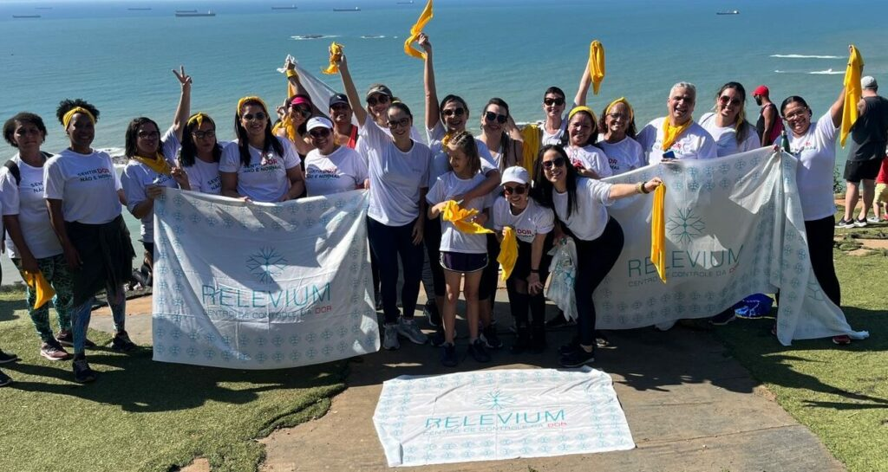

3° Subida ao Morro do Moreno
Data: 20/09 | Horário: 06h30 às 10h30
Cuidar é um ato de amor
O Movimento
A subida ao Morro do Moreno com a Relevium nasceu com o propósito de romper barreiras, combater preconceitos e incentivar que as pessoas tanto busquem quanto ofereçam apoio.
Desde 2022, quando teve início, esse movimento tem ganhado força a cada ano, com um número crescente de pessoas entendendo que discutir o suicídio é essencial, mas deve ser feito com responsabilidade.

Você não está só. Estamos juntos nessa caminhada!